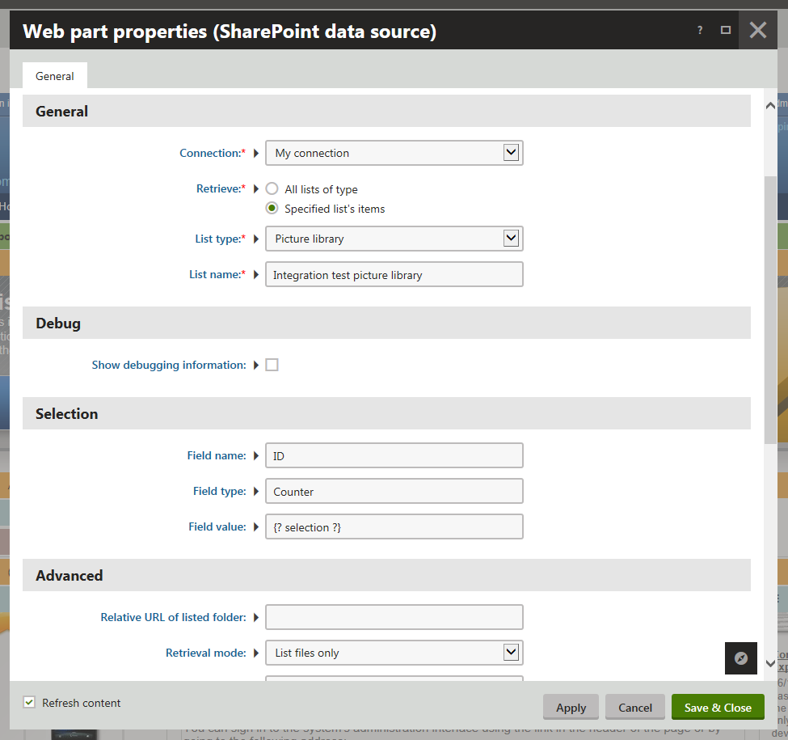
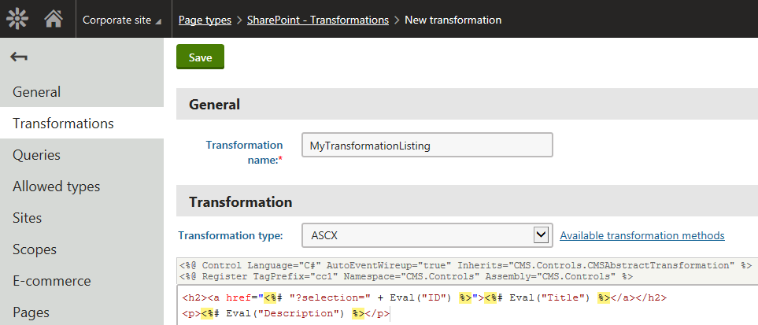
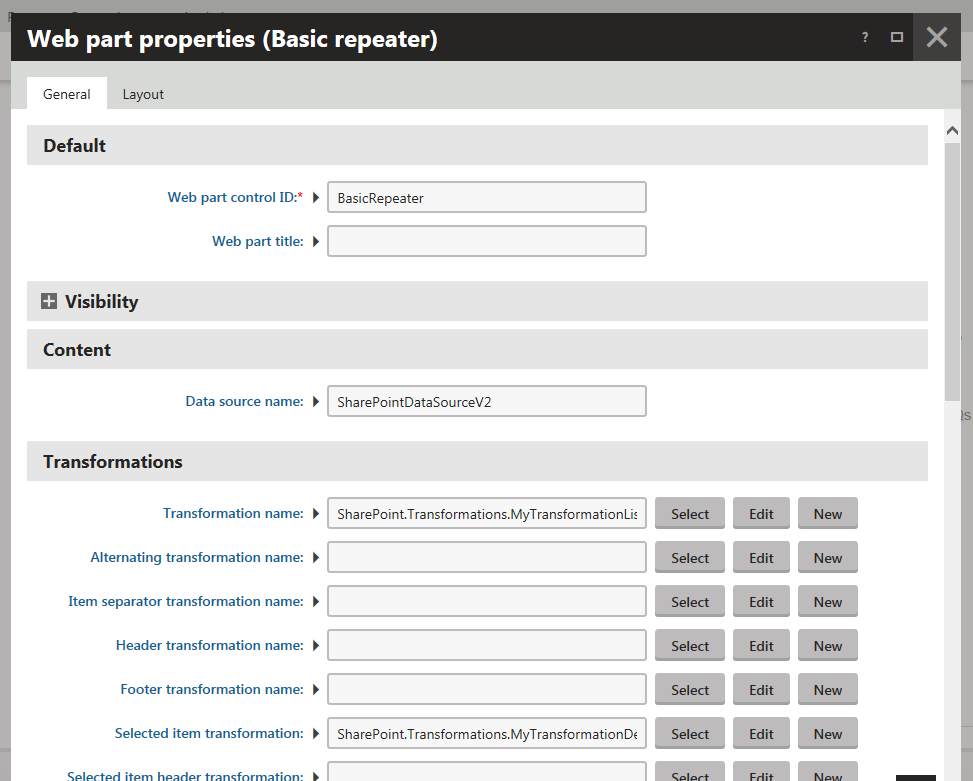
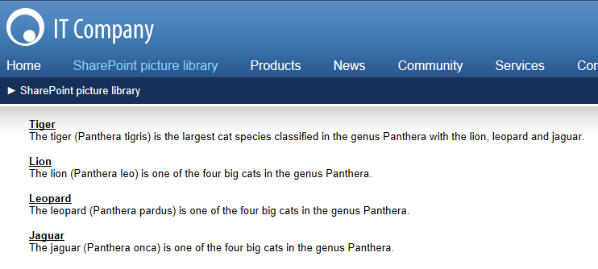

Example - Displaying a SharePoint picture library in Kentico
The example demonstrates how you can display a picture library stored on a SharePoint server on a Kentico website.
The example uses two custom transformations. If the URL of the page where you are viewing the SharePoint data contains a special parameter value, the system displays the corresponding picture library item. Otherwise, it displays all items from the specified picture library list. You specify the name of the parameter in the Selection section of the SharePoint data source web part.
The example uses the sample Corporate Site, and consists of the following parts:
Configuring a SharePoint integration connection
Open the SharePoint connections application.
Click New connection.
Enter the following values for the connection's properties.
Display name: My connection
Site URL: Enter the URL of your SharePoint site.
SharePoint version: Select the version of your SharePoint server.
Based on your system configuration, specify connection properties in the Authentication section.
Click Save.
Click Test connection
If the connection is functional, the system displays a notification message in green color.
The system creates a new SharePoint connection.

Configuring a SharePoint integration connection
You can now use the connection while configuring the SharePoint data source web part.
Configuring the SharePoint data source web part
Open the Pages application.
Select a page in the content tree.
You are selecting a page where the system will display the requested SharePoint data.
Switch to the Design tab.
Add the SharePoint data source web part to the selected web part zone.
The system opens the Web part properties (SharePoint data source) dialog window.
The dialog window allows you to specify web part properties.
Configure the SharePoint data source web part.
Connection: My connection
Retrieve: Specified list's items
List type: Picture library
List name: Here you need to specify the name of the SharePoint picture library list whose items you want to display.
Field name: ID
The value is the internal name of the SharePoint column the system uses for item(s) selection.
Field type: Counter
Field value: {? selection ?}
If the URL of the current page contains the selection parameter, the system selects from the specified picture library list the item whose ID column contains the selection value.
If the URL of the current page does not contain the selection parameter, the system lists all items from the specified picture library list.
Retrieval mode: List files only

Click Save & Close.
The system closes the Web part properties (SharePoint data source) dialog window.
The page where you want to display the SharePoint data now contains the SharePoint data source web part. Next, you need to define the transformations, and add the Basic repeater web part to the same page.
Defining the transformations
Open the Page types application.
Edit (
 ) the SharePoint - Transformations page type on the Transformations tab.
) the SharePoint - Transformations page type on the Transformations tab.Click New transformation.
Enter the following values for properties of the first transformation.
Transformation name: MyTransformationListing
Transformation type: ASCX
Enter the following transformation code.
<h2><ahref="<%# "?selection=" + Eval("ID") %>"><%# Eval("Title") %></a></h2><p><%# Eval("Description") %></p>The transformation lists all items contained in the specified library. The items are displayed as links leading to the items details.

Defining a transformationClick Save.
Go back to the Transformations tab of the SharePoint - Transformations page type, and click New transformation.
Enter the following values for properties of the second transformation.
Transformation name: MyTransformationDetail
Transformation type: ASCX
Enter the following transformation code.
<h2><%# Eval("Title") %></h2><p><%# Eval("Description") %></p><%-- 'Author' is a lookup field containing ID and value separated by semicolon. --%>Author: <%# Eval("Author").ToString().Split(new[]{';'})[1] %><br/>(Created on: <%# Eval("Created") %>)<br/><imgsrc="<%# GetSharePointImageUrl() %>" /><h5>Keywords</h5><%# Eval("Keywords") %>The transformation displays item details.
(Optional) To give the retrieved files the ability to be downloaded, surround the target element with an <a> tag referring to the same URL. For example:
<ahref="<%# GetSharePointImageUrl() %>" download><imgsrc="<%# GetSharePointImageUrl() %>" /></a>Click Save.
The system adds two custom transformations. One transformation displays a listing of items, the other displays details of a selected item.
Configuring the Basic repeater web part
Open the Pages application.
In the content tree, select the page where you placed the SharePoint data source web part.
Switch to the Design tab.
Add the Basic repeater web part to the selected web part zone.
The system opens the Web part properties (Basic repeater) dialog window.
The dialog window allows you to specify web part properties.
Configure the Basic repeater web part.
Data source name: SharePointDataSourceV2
You need to enter the value of the Web part control ID property of the SharePoint data source web part.
Transformation name: MyTransformationListing
Selected item transformation: MyTransformationDetail

Click Save & Close.
The system closes the Web part properties (Basic repeater) dialog window.
You have configured the system to display the requested SharePoint data retrieved through the SharePoint data source web part. You can now view this data on your website.
Result - Viewing the SharePoint data
Open the live website.
Go to the page where you placed the SharePoint data source and Basic repeater web parts.
The system displays all items contained in the specified SharePoint picture library.

Click the name of any listed item.
The system displays the details of the selected item.